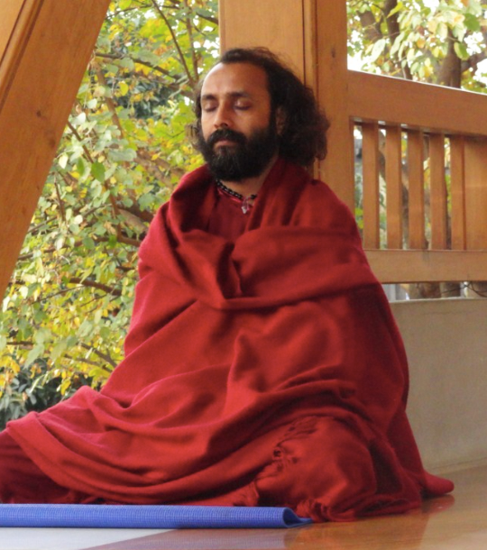

Swami Prem Keerti
My life made a turn at young age when listening to Osho, and the words “live dangerously!” hit me so deeply to set out on a life journey full of adventures, in both the outer and inner world. Since then, living dangerously and living with totality is the key to explore myself. That’s how I decided to become an Osho sannyasin and just after graduation I left my native village in Rajasthan and a waiting career as a scientist and engineer, with a thirst to instead dive deeper into the world of inner sciences.